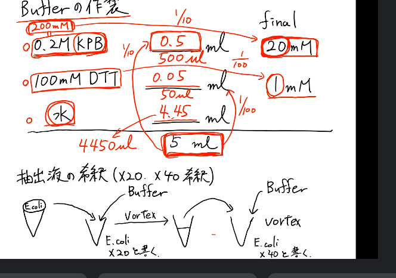

The Department of Biotechnology has kept a high standard of education and research in a wide range of the biotechnology field. Employing DNA technology, protein engineering and cell/tissue culturing techniques, in combination with the recent advancement of the biomolecular structure determination, genomic information and bioinformatics, the department is revealing basic mechanisms of a variety of biological functions.
